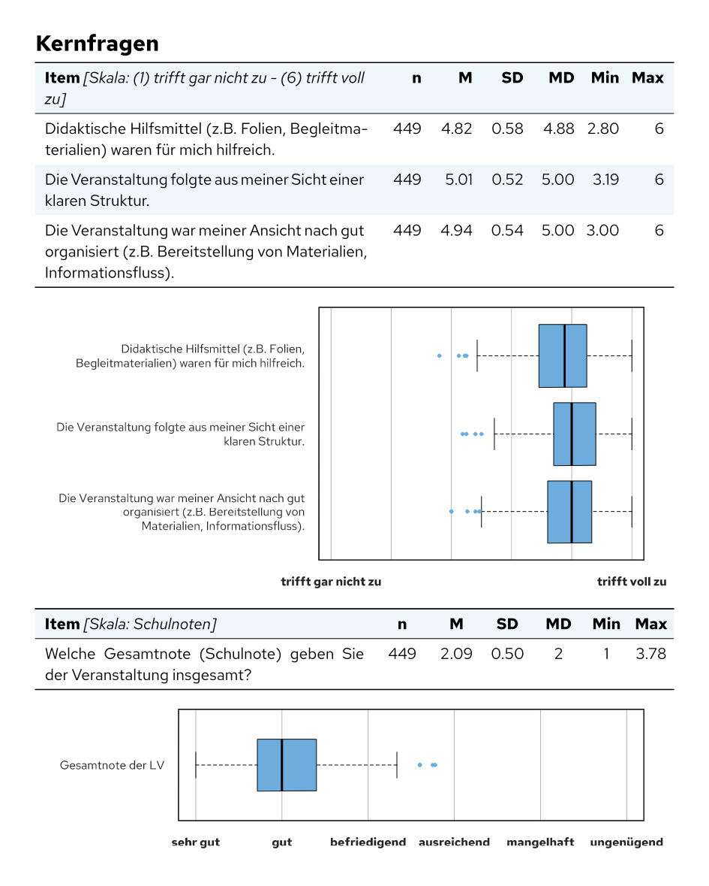

Diese Anleitung zeigt den Weg von den Rohdaten einer Befragung bis zu den fertigen PDF-Berichten:
- Daten aus evasys einlesen,
- festlegen, welche Fragen in welchen Bericht kommen,
- den Bericht in Quarto schreiben,
- alle Berichte auf einmal erstellen.
Die Schritte 1 und 2 laufen hier mit den fiktiven Beispieldateien des Pakets. Eine vollständige Berichtsvorlage mit Layout und zwei lauffähigen Beispielen gibt es unter set-template.
1. Daten aus evasys einlesen
evasys exportiert die Antworten (Rohdaten) und ein Codebuch mit
Fragetexten, Fragetypen und Antwortoptionen, jeweils als CSV-Datei.
evasys_read_data() liest beide ein und hängt die
Informationen aus dem Codebuch an die Variablen an:
rohdaten <- system.file("extdata", "beispiel_evasys_rohdaten.csv", package = "setanalysis")
codebuch <- system.file("extdata", "beispiel_evasys_codebuch.csv", package = "setanalysis")
daten <- evasys_read_data(rohdaten, codebuch)
names(daten)
#> [1] "semester" "zufrieden" "abschluss_1" "abschluss_2" "kommentar"
#> [6] "alter"Jede Variable trägt jetzt vier Attribute, auf die die Auswertungsfunktionen zugreifen:
attributes(daten$zufrieden)
#> $label
#> [1] "Ich bin mit dem Studium zufrieden."
#>
#> $nr
#> [1] "1.2"
#>
#> $type
#> [1] "sk"
#>
#> $labels
#> trifft gar nicht zu
#> 1 2 3
#> trifft voll zu
#> 4 5 6
#> kann ich nicht beurteilen
#> 7-
label: Fragetext (Überschrift im Bericht), -
nr: Fragenummer im Fragebogen (für die inkl.-Logik, siehe Schritt 2), -
type: Fragetyp,"sc"(Single Choice),"mc"(Multiple Choice),"sk"(Skala) oder"open/num"(offene oder numerische Frage), -
labels: Antwortcodes mit ihren Texten (nur Single Choice und Skalen).
Außerdem entfernt evasys_read_data() das Präfix
[FILTER] aus Spaltennamen und ersetzt Platzhalter wie
"-", "." oder "[Freitextfeld]" in
offenen Antworten durch NA. Ohne Pfadangaben öffnet sich in
RStudio ein Dialog zur Dateiauswahl.
Daten aus anderen Quellen lassen sich genauso nutzen, wenn man die Attribute selbst setzt:
note <- c(1, 2, 2, 3, NA, 1)
attr(note, "label") <- "Welche Gesamtnote geben Sie der Veranstaltung?"
attr(note, "nr") <- "3.1"
attr(note, "type") <- "sk"Zeilen filtern, ohne die Attribute zu verlieren
Für einen Bericht über einen Teil der Daten (z. B. einen Fachbereich) werden Zeilen ausgewählt. Dabei entfernt R die Attribute der Spalten:
lve <- BspDaten$dataLVE
auswahl <- lve$Teilbereich == "Beispielkunde - SoSe24"
attr(lve[auswahl, ]$KF_01, "label")
#> NULLEine kleine Hilfsfunktion überträgt sie wieder:
zeilen_waehlen <- function(daten, auswahl) {
neu <- daten[auswahl, , drop = FALSE]
for (spalte in names(daten)) {
mostattributes(neu[[spalte]]) <- attributes(daten[[spalte]])
}
neu
}
attr(zeilen_waehlen(lve, auswahl)$KF_01, "label")
#> [1] "Didaktische Hilfsmittel (z.B. Folien, Begleitmaterialien) waren für mich hilfreich."Mit label_test() lässt sich vorher prüfen, ob die Namen
in der Berichtstabelle genauso geschrieben sind wie in den Daten:
label_test(BspDaten$pInfo$FB.txt.falsch, lve$Teilbereich)
#> [1] "Der Eintrag \"Angewandte Fktion - SoSe24\" aus der Berichtstabelle kommt nicht in gleicher Schreibweise in der Variable vor."2. Festlegen, welche Fragen in welchen Bericht kommen
Oft entstehen aus einer Befragung viele Berichte, z. B. einer pro Studiengang, und nicht jede Frage gehört in jeden Bericht. Das regeln zwei Excel-Tabellen.
Die Berichtstabelle enthält eine Zeile pro Bericht mit den Merkmalen, nach denen sich die Berichte unterscheiden. Die erste Zeile ist der Master-Bericht mit allen Fragen (zur Kontrolle):
berichte_pfad <- system.file("extdata", "beispiel_berichte.xlsx", package = "setanalysis")
regeln_pfad <- system.file("extdata", "beispiel_regeln.xlsx", package = "setanalysis")
berichte <- readxl::read_excel(berichte_pfad)
berichte[, c("Code", "Art", "Abschluss", "Studiengang")]
#> # A tibble: 6 × 4
#> Code Art Abschluss Studiengang
#> <chr> <chr> <chr> <chr>
#> 1 MASTER alles.master alle alle
#> 2 Gesamtbericht alles alle alle
#> 3 B.Sc._Musterwissenschaft Studiengang Bachelor of Science (B.Sc.) Musterwisse…
#> 4 M.Sc._Musterwissenschaft Studiengang Master of Science (M.Sc.) Musterwisse…
#> 5 B.A._Beispielkunde Studiengang Bachelor of Arts (B.A.) Beispielkun…
#> 6 Sonderauswertung speziell alle alleDie Regeltabelle enthält eine Zeile pro Frage.
inkl.2.1 steht für Frage 2.1, die Bedingung ist R-Code mit
den Spaltennamen der Berichtstabelle. Zusätzlich gibt es
immer TRUE und immer FALSE.
header-Zeilen stehen für ganze Abschnitte: Ein Abschnitt
erscheint, sobald eine seiner Fragen erscheint (diese Bedingung wird
automatisch erzeugt).
regeln <- readxl::read_excel(regeln_pfad)
as.data.frame(regeln)
#> Variable TRUE (in einen Bericht rein), wenn…
#> 1 inkl.1.1 immer TRUE
#> 2 inkl.1.2 Art != "speziell"
#> 3 inkl.1.3 Abschluss == "Bachelor of Science (B.Sc.)" | Art == "alles"
#> 4 inkl.2.1 Studiengang == "Musterwissenschaft"
#> 5 inkl.2.2 immer FALSE
#> 6 inkl.3.1 Art == "speziell"
#> 7 header1 eine der inkl.1.x-Variablen == TRUE
#> 8 header2 eine der inkl.2.x-Variablen == TRUE
#> 9 header3 eine der inkl.3.x-Variablen == TRUEinput_tabelle() wertet die Regeln für jeden Bericht aus
und hängt pro Regel eine Spalte mit TRUE oder
FALSE an:
tabelle <- input_tabelle(berichte_pfad, regeln_pfad)
tabelle[, c("Code", "inkl.1.3", "inkl.2.1", "header2", "inkl.3.1", "header3")]
#> # A tibble: 6 × 6
#> Code inkl.1.3 inkl.2.1 header2 inkl.3.1 header3
#> <chr> <lgl> <lgl> <lgl> <lgl> <lgl>
#> 1 MASTER TRUE TRUE TRUE TRUE TRUE
#> 2 Gesamtbericht TRUE FALSE FALSE FALSE FALSE
#> 3 B.Sc._Musterwissenschaft TRUE TRUE TRUE FALSE FALSE
#> 4 M.Sc._Musterwissenschaft FALSE TRUE TRUE FALSE FALSE
#> 5 B.A._Beispielkunde FALSE FALSE FALSE FALSE FALSE
#> 6 Sonderauswertung FALSE FALSE FALSE TRUE TRUEIm Bericht werden die Werte der aktuellen Zeile als Variablen
gesetzt. Jede Auswertungsfunktion mit dem Argument
nr = "2.1" fragt dann die Variable inkl.2.1 ab
und gibt nur etwas aus, wenn sie TRUE ist:
bericht <- tabelle[params$i, ] # Zeile des aktuellen Berichts
schalter <- grep("^(inkl|header)", names(bericht), value = TRUE)
list2env(as.list(bericht[schalter]), envir = environment())Ganze Abschnitte lassen sich in Quarto mit
#| eval: !expr header2 ein- und ausblenden. Ohne
Fragenummer oder mit inkl = TRUE erscheint eine Frage
immer.
3. Den Bericht schreiben
Die Auswertungsfunktionen geben den Bericht als Markdown bzw. Typst
aus. Sie stehen deshalb in R-Chunks mit output: asis. Ein
minimaler Bericht:
---
title: "Lehrveranstaltungsevaluation"
format: typst
---
```{r}
#| include: false
library(setanalysis)
change_analysis_defaults(color.bars = "#507289") # Akzentfarbe der Grafiken
daten <- BspDaten$dataLVE
```
# Kernfragen
```{r}
#| output: asis
merge_aggr_sk(daten[, c("KF_01", "KF_02", "KF_03")], kennung = daten$Kennung, aggr = TRUE)
merge_grade(daten$Note, daten$Kennung)
```
Die passende Funktion für jeden Fragetyp
| Fragetyp | Funktion |
|---|---|
Single Choice ("sc") |
merge_sc(); Sonderfälle: merge_fachsem(),
merge_subj() (1. und 2. Fach) |
Multiple Choice ("mc") |
merge_mc() mit allen Spalten der Frage |
Skala ("sk") |
merge_sk(); mehrere Items gemeinsam:
merge_aggr_sk()
|
Zahlen ("open/num") |
merge_num() |
Offene Frage ("open/num") |
merge_open() |
| Kennwerte je Lehrveranstaltung |
merge_grade() (Gesamtnote), merge_wl()
(Workload), merge_rueck() (Rücklauf),
merge_aggr_sk(aggr = TRUE)
|
merge_auto() wählt die Funktion anhand des Attributs
type selbst, merge_many() wertet einen ganzen
Block von Spalten aus und fasst dabei die Spalten einer
Multiple-Choice-Frage zusammen:
merge_many(daten[, c("semester", "zufrieden", "abschluss_1", "abschluss_2", "kommentar")])Einstellungen
Farben, Spaltenbreiten und Voreinstellungen, z. B. ob bei
Single-Choice-Fragen auch eine Grafik erscheint, stehen in
setanalysis_defaults und gelten für alle folgenden
Aufrufe:
change_analysis_defaults(
color.bars = "#507289", # Akzentfarbe
show.plot.sc = FALSE, # Single Choice nur als Tabelle
show.plot.mc = FALSE # Multiple Choice nur als Tabelle
)Eine Liste aller Einstellungen steht unter
?setanalysis_defaults.
Offene Antworten im Anhang
Mit appendix = TRUE erscheint an der Stelle einer
offenen Frage nur ein Link in den Anhang. appendix_open()
gibt am Ende des Berichts alle gesammelten Antworten aus und leert
danach den Speicher, damit der nächste Bericht in derselben R-Sitzung
neu beginnt:
merge_open(daten$kommentar, nr = "3.1", appendix = TRUE)
# … weitere Fragen …
appendix_open()Legenden
bsp_table_stat(), bsp_boxplot() und
bsp_evasys_sk6() erzeugen Erläuterungen zu den Kennwerten
und Grafiken, z. B. für einen Abschnitt „Hinweise zum Lesen des
Berichts“.
Vorschau ohne Rendern
In RStudio zeigt markdown_in_viewer() das Ergebnis einer
einzelnen Auswertung im Viewer an:
markdown_in_viewer(merge_sc(BspDaten$dataLVE$V3_D))4. Alle Berichte erstellen
Das Quarto-Dokument erhält einen Parameter i für die
Zeile der Berichtstabelle (params: i: 1 im YAML-Kopf). Ein
R-Skript rendert dann jeden Bericht nacheinander:
library(quarto)
tabelle <- input_tabelle("berichte.xlsx", "regeln.xlsx")
for (i in seq_len(nrow(tabelle))) {
quarto_render(
input = "bericht.qmd",
output_file = paste0(tabelle$Code[i], ".pdf"),
execute_params = list(i = i)
)
}Das Beispielskript beispiele/alle-berichte-rendern.R in
set-template
ergänzt das um ein Protokoll der Stichprobengrößen, überspringt Berichte
mit zu wenigen Stimmen und macht nach einem Fehler mit dem nächsten
Bericht weiter.